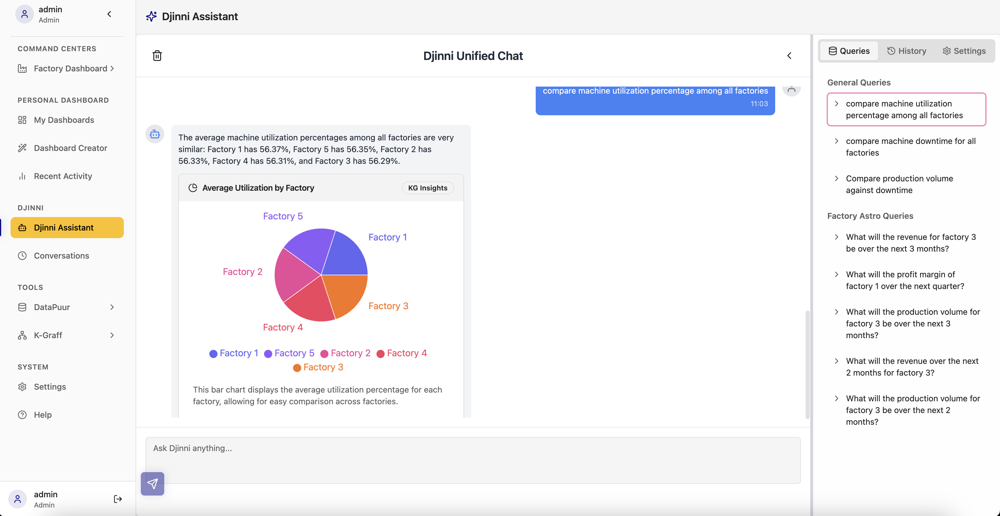

Djinni Assistant
- Home
- Getting Started
- Djinni Assistant (You are here)
- Tools
- DataPuur
- KGInsights
- API Reference
Table of Contents
- Introduction
- Features Overview
- Accessing Djinni Assistant
- Using Djinni Assistant
- Basic Interaction
- Query Types
- Visualization Features
- Factory-Specific Queries
- Query History and Management
- Advanced Features
- Best Practices
- Troubleshooting
Introduction
Djinni Assistant is an AI-powered conversational interface integrated into the RSW platform. It allows users to interact with data, generate insights, and visualize information using natural language queries. This documentation covers how to use Djinni Assistant effectively.

Features Overview
- Natural Language Querying: Ask questions in plain English
- Data Visualization: Automatically generates charts and graphs
- Context-Aware Responses: Maintains conversation context
- Specialized Query Categories: General, factory-specific, and custom queries
- Query History: Tracks and saves previous interactions
- Interactive Visualizations: Dynamic charts that respond to queries
Accessing Djinni Assistant
- Navigation:
- Click on "Djinni Assistant" in the sidebar navigation
-
Alternatively, use the shortcut key
Ctrl+D(Windows/Linux) orCmd+D(Mac) -
Interface Components:
- Chat Area: Main conversation interface
- Query Input: Text field at the bottom
- Visualization Panel: Displays charts and graphs
- Query Categories: Sidebar with query suggestions
- Settings: Configuration options
Using Djinni Assistant
Basic Interaction
- Starting a Conversation:
- Type your question in the input field
- Press Enter or click the Send button
-
Wait for Djinni to process and respond
-
Query Types:
- Informational: "What is the total production for June?"
- Comparative: "Compare machine utilization percentage among all factories"
- Analytical: "What's causing the increase in downtime?"
-
Predictive: "What will be the revenue for factory 3 over the next 3 months?"
-
Refining Queries:
- Ask follow-up questions to drill down
- Specify time periods: "Show me data from last quarter"
- Filter by categories: "Only show Factory 2 data"
Visualization Features
- Chart Types:
- Bar charts for comparisons
- Line charts for trends
- Pie charts for proportions
- Radar charts for multi-dimensional metrics
- Tables for detailed data

- Interacting with Visualizations:
- Hover over data points for details
- Click on legend items to toggle visibility
- Use zoom controls for detailed views
-
Download charts as images or data
-
Customizing Visualizations:
- Request specific chart types: "Show as a bar chart"
- Adjust time ranges: "Show monthly instead of quarterly"
- Change metrics: "Show by revenue instead of units"
Factory-Specific Queries
Djinni Assistant provides specialized queries for factory analytics:
- Production Queries:
- "What is the production volume for Factory 2?"
- "Compare production volumes across all factories"
-
"Show production trend for the past year"
-
Revenue Queries:
- "What will be the revenue for Factory 3 over the next 3 months?"
- "Compare profit margins across factories"
-
"Show revenue breakdown by product line"
-
Efficiency Queries:
- "Compare machine utilization percentage among all factories"
- "What's the downtime percentage for Factory 1?"
-
"Which factory has the highest efficiency?"
-
Quality Metrics:
- "Show quality metrics for Factory 4"
- "Compare defect rates across production lines"
- "What's the trend in quality scores?"
Query History and Management
- Viewing History:
- Click the "History" tab to view past conversations
- Search through previous queries
-
Filter by date or query type
-
Saving Important Queries:
- Star important conversations for quick access
- Create named bookmarks for frequent queries
-
Export conversation logs for reporting
-
Managing Context:
- Start new conversation with the "New Chat" button
- Clear context with "Reset Conversation"
- Reference previous queries: "Like the last query but for Factory 2"
Advanced Features
- Data Integration:
- Query across multiple data sources
- Combine DataPuur and KGInsights data
- Access historical and real-time information
Best Practices
- Effective Querying:
- Be specific about metrics and time periods
- Start with broad questions, then refine
-
Use consistent terminology
-
Optimizing Results:
- Provide feedback on helpful/unhelpful responses
- Rephrase questions if results aren't as expected
-
Use suggested queries as templates
-
Collaboration[Planned for Future Releases]:
- Share insights with team members
- Use in meetings for dynamic data exploration
- Create standard query templates for teams
Troubleshooting
- Query Not Understood:
- Rephrase using simpler terms
- Check for typos or ambiguous language
-
Use suggested query templates
-
Incorrect Results:
- Verify data sources are up to date
- Check for filters that might be limiting results
-
Specify time ranges explicitly
-
Performance Issues:
- Limit complex queries during peak usage times
- Break complex questions into simpler ones
- Refresh the browser if response times are slow
Example Query Workflow
Here's an example of how to use Djinni Assistant effectively:
-
Start with a general question:
"Show me machine utilization across all factories" -
Djinni displays a pie chart showing utilization percentages.
-
Ask a follow-up question:
"Which factory has the lowest utilization?" -
Djinni identifies Factory 3 with 56.23% utilization.
-
Drill down further:
"What are the main causes of downtime in Factory 3?" -
Djinni provides a breakdown of downtime causes.
Previous: Getting Started | Next: DataPuur
Last updated: July 6, 2025